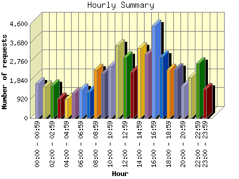
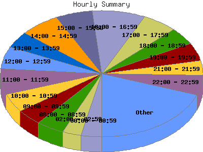

Report generated by Analog 6.0 and Report Magic 2.21
|
Web Server Statistics for "Harish Narayanan (hnarayan) - November 2007" Report generated by Analog 6.0 and Report Magic 2.21 |
The Hourly Summary identifies the level of activity broken down by each hour. Remember that one page hit can result in several server requests as the images for each page are loaded. This summary also compares the level of activity during working hours and after hours as a total for the report time frame.


| Hour | Number of requests | Number of bytes transferred | Percentage of the bytes | Percentage of the requests | |
|---|---|---|---|---|---|
| 1. | 00:00 - 00:59 | 1,703 | 60.361 MB | 3.00% | 3.21% |
| 2. | 01:00 - 01:59 | 1,554 | 77.225 MB | 3.84% | 2.93% |
| 3. | 02:00 - 02:59 | 1,602 | 46.083 MB | 2.29% | 3.02% |
| 4. | 03:00 - 03:59 | 949 | 45.909 MB | 2.29% | 1.79% |
| 5. | 04:00 - 04:59 | 928 | 21.129 MB | 1.05% | 1.75% |
| 6. | 05:00 - 05:59 | 1,234 | 50.355 MB | 2.51% | 2.33% |
| 7. | 06:00 - 06:59 | 1,401 | 61.042 MB | 3.04% | 2.65% |
| 8. | 07:00 - 07:59 | 1,290 | 42.602 MB | 2.12% | 2.44% |
| 9. | 08:00 - 08:59 | 2,359 | 84.333 MB | 4.20% | 4.45% |
| 10. | 09:00 - 09:59 | 2,174 | 88.791 MB | 4.42% | 4.10% |
| 11. | 10:00 - 10:59 | 2,540 | 54.419 MB | 2.71% | 4.79% |
| 12. | 11:00 - 11:59 | 3,538 | 141.526 MB | 7.04% | 6.68% |
| 13. | 12:00 - 12:59 | 2,969 | 97.367 MB | 4.85% | 5.61% |
| 14. | 13:00 - 13:59 | 2,274 | 109.561 MB | 5.45% | 4.29% |
| 15. | 14:00 - 14:59 | 3,411 | 102.442 MB | 5.10% | 6.44% |
| 16. | 15:00 - 15:59 | 3,120 | 220.703 MB | 10.99% | 5.89% |
| 17. | 16:00 - 16:59 | 4,525 | 129.329 MB | 6.44% | 8.54% |
| 18. | 17:00 - 17:59 | 2,991 | 98.482 MB | 4.90% | 5.65% |
| 19. | 18:00 - 18:59 | 2,360 | 95.263 MB | 4.74% | 4.46% |
| 20. | 19:00 - 19:59 | 2,400 | 82.910 MB | 4.13% | 4.53% |
| 21. | 20:00 - 20:59 | 1,564 | 82.719 MB | 4.12% | 2.95% |
| 22. | 21:00 - 21:59 | 1,967 | 80.935 MB | 4.03% | 3.71% |
| 23. | 22:00 - 22:59 | 2,688 | 65.153 MB | 3.24% | 5.08% |
| 24. | 23:00 - 23:59 | 1,426 | 70.379 MB | 3.50% | 2.69% |
| Work Hours (8:00am-4:59pm) | 26,910 | 1.004 GB | 51.19% | 50.80% | |
| After Hours (5:00pm-7:59am) | 26,057 | 980.547 MB | 48.81% | 49.20% | |
This report was generated on December 5, 2007 12:38.
Report time frame November 1, 2007 00:00 to November 30, 2007 23:49.
| Web statistics report produced by: | |
 Analog 6.0 Analog 6.0 |  Report Magic 2.21 Report Magic 2.21 |